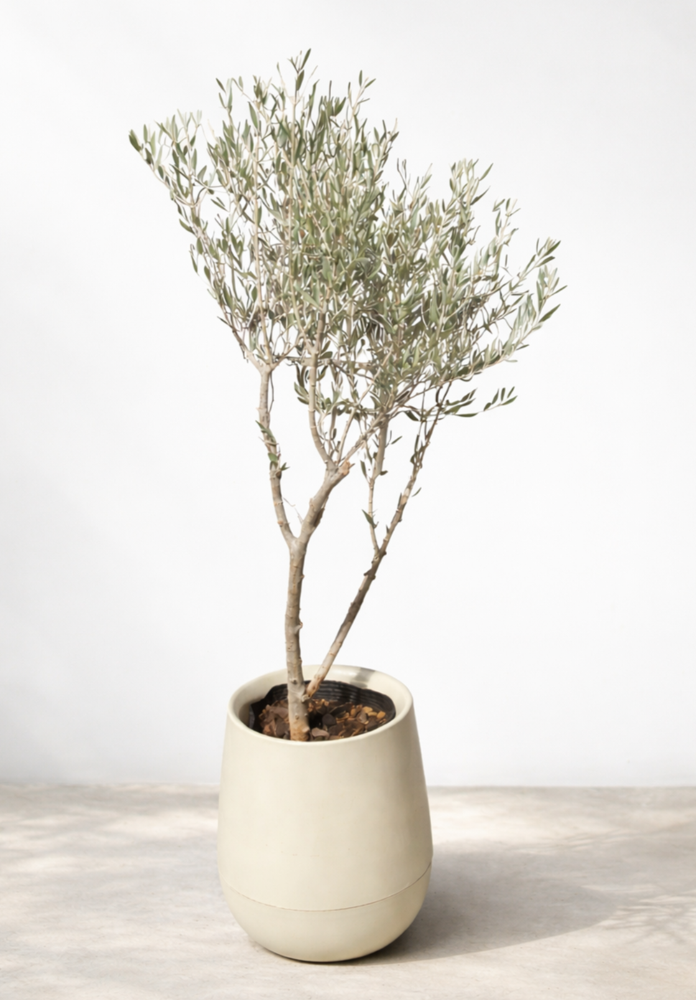

Luz
Sol directo o la máxima luz natural disponible. Cuanta más claridad estable, mejor.

TU GUÍA DE CUIDADO
Olea europaea
Una especie mediterránea de follaje gris verdoso y presencia serena. Para mantenerse compacta y saludable necesita muchísima luz, excelente ventilación y un sustrato que drene con rapidez.
Ver en la tiendaSol directo o la máxima luz natural disponible. Cuanta más claridad estable, mejor.
Moderado. Dejá secar parte del sustrato antes de volver a regar.
Baja a media. Prefiere aire circulante y no necesita humedad tropical.
Exterior soleado o interior pegado a una ventana muy luminosa y ventilada.
LO ESENCIAL
El olivo necesita mucha luz para conservar un crecimiento compacto. Lo ideal es que reciba varias horas de sol directo. Si vive en interior, elegí la ventana más luminosa y evitá ubicarlo lejos de la fuente de luz.
Regá a fondo y dejá que el exceso de agua salga completamente. Esperá a que una parte importante del sustrato se haya secado antes del siguiente riego. Tolera mejor una leve sequedad que raíces permanentemente mojadas.
Es uno de los puntos más importantes. Usá una mezcla suelta y drenante y una maceta con orificios libres. Nunca dejes agua acumulada en el plato o cubremaceta.
Prefiere ambientes ventilados y tolera mejor el aire seco que las especies tropicales. Evitá espacios cerrados, oscuros o excesivamente húmedos y protegelo de cambios térmicos extremos cuando esté en maceta.
Podá ramas secas o demasiado largas para conservar la forma. Durante primavera y verano podés fertilizar de forma moderada; evitá sobrealimentar una planta con poca luz.
Trasplantá cuando las raíces hayan ocupado la mayor parte del recipiente o el sustrato haya perdido drenaje. Elegí una maceta apenas mayor para que la mezcla no permanezca húmeda demasiado tiempo.
SANTA FE · ARGENTINA
El comportamiento del olivo cambia con la luz, la temperatura y la velocidad con la que se seca el sustrato.
PRIMAVERA
Con días más largos comienza una etapa de crecimiento activo. Es un buen momento para revisar raíces, podar y retomar la fertilización.
VERANO
El calor de Santa Fe puede secar el sustrato con rapidez. Revisalo con frecuencia, especialmente si la maceta está al exterior, pero evitá regar mientras todavía esté húmedo.
OTOÑO
A medida que disminuye la intensidad de luz, el consumo de agua también puede reducirse. Espaciá riegos y disminuí la fertilización.
INVIERNO
En invierno el sustrato tarda más en secarse. Mantenelo en la ubicación más luminosa disponible y protegé las raíces en maceta de heladas intensas.
LEÉ SUS SEÑALES
Puede aparecer por falta de luz, exceso de agua o cambios bruscos de ambiente. Revisá primero si la ubicación recibe suficiente sol y si el sustrato permanece húmedo demasiado tiempo.
Suelen indicar problemas de riego o drenaje. Si el sustrato está húmedo durante muchos días, espaciá los riegos y comprobá que el agua pueda salir con facilidad.
Puede ocurrir cuando la planta pasa demasiado tiempo seca, recibe calor extremo o atraviesa un cambio fuerte de ambiente. Ajustá el riego según el sustrato, no por calendario.
Generalmente necesita más luz. Un olivo que recibe poca iluminación tiende a perder densidad y a producir ramas débiles.
Podrían relacionarse con exceso de humedad, frío o problemas foliares favorecidos por poca ventilación. Retirá hojas muy afectadas y corregí primero las condiciones de cultivo.
Revisá regularmente hojas y ramas. Cochinillas y ácaros pueden aparecer, especialmente en ejemplares estresados o mantenidos en interior durante períodos prolongados.
IMPORTANTE
El olivo no se considera una planta ornamental típicamente tóxica, pero conviene evitar que niños o mascotas mastiquen hojas, ramas o sustrato y mantener fuera de su alcance productos de fertilización o tratamiento.